Estrategia de Simulación Orientada a Eventos con Rastreo de Actividades
Introducción
En esta Conferencia trataremos una modificación de la Estrategia de modelación-Simulación Orientada a Eventos a una nueva estrategia que se conoce como Orientación a Eventos con Rastreo de Actividades. El objetivo final es hacer el modelo general más claro y simple de implementar.
Planteamiento de un problema ejemplo
Para ilustrar la estrategia OE con rastreo de actividades (RA) y su comparación con la estrategia OE clásica comenzaremos planteando un problema que será resuelto por ambas vias. Se trata de una versión simplificada del funcionamiento de un Centro de Cálculo donde hay una única computadora (mainframe) que atiende un número finito de posibles usuarios (digamos, para fijar un número, 99 usuarios). Cada usuario (Usui para i=1,2,...99) está trabajando simultáneamente en un solo programa. Tiene un tiempo de preparación (en su mesa de trabajo) o de edición del programa ted i, con una distribución conocida; tiene además un tiempo de procesamiento tproc i que es también específico de el. Se supone que cuando un usuario termina una versión de la edición, se incorpora a la cola de la computadora. Esta computadora atiende a los usuarios por disciplina FIFO, de manera que el primero en la cola es el que se supone que está procesando. Cuando termine el procesamiento, el programa pasa directamente a un Almacén. Este Almacén es controlado por un Operador, que cada 6 horas (480) extrae los resultados de los programas y se los entrega a los usuarios correspondientes, quienes inician entonces de nuevo la fase de edición y así se repite el ciclo.
El problema puede intentar resumirse en un esquema como el siguiente:
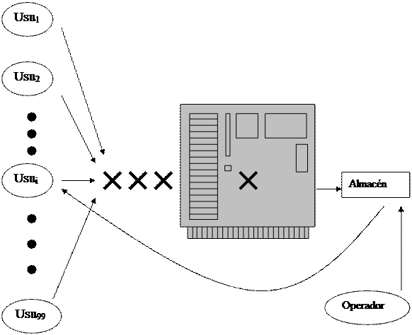
Solución mediante la estrategia clásica de simulación orientada a eventos (OE)
Un enfoque con OE supone en este caso consideraciones como las siguientes: Serán componentes activas cada uno de los 99 usuarios, la computadora y el operador.
· El Usui cambiará internamente de estado cuando termine el estado de edición. Otros cambios de estado de Usui dependen de la computadora y del operador. El cambio de estado de Usui genera a su vez un cambio en la computadora porque incrementa la cola, e incluso la pone activa si estaba ociosa porque la cola estaba vacía.
· La computadora cambiara internamente de estado cuando termine un procesamiento (el primero de la cola), por un momento se pondría ociosa y volvería a cambiar de estado (ocupada) si hay algún elemento en la cola. El primer cambio de estado supone una influencia sobre el usuario que estaba procesando y sobre el almacén. En efecto se quita de la cola de la computadora, se pasa al usuario al estado de espera por el operador y se incrementa su programa al almacén. El segundo cambio de estado (inicio de un procesamiento) cambia el estado de otro usuario aquel que pasa a la posición de ser procesado.
· El operador cambiará internamente de estado, libre a ocupado, cada 480 minutos. En ese momento vacía el almacén y entrega los programas a los usuarios, definiendo por tanto influencias sobre este. Inmediatamente pasa al estado libre para esperar de nuevo 480 minutos.
En resumen nuestro modelo OE considerará como componentes activas los usuarios, la computadora y el operador y como componentes pasivas el almacén. Consideraremos que un Usuario se activa cuando termina un proceso de edición (los otros cambios de estado son derivados de la activación de la computadora o el Operador). Consideramos que la Computadora se activa cuando termina el procesamiento del primero que está en la cola y que el Operador se activa cuando se decide a abrir el Almacén.
- Definición de componentes
ComponentesActivas={Usu1, Usu2, ...,Usu99,Computadora, Operador}
ComponentesPasivas={Almacen}
- y 3. Definición de estados para todas las componentes y de tiempo remanente para las componentes activas
Para cada usuario:
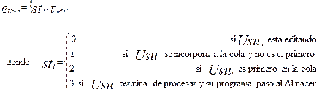
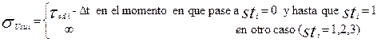
En la expresión anterior, Dt representa el intervalo de tiempo que transcurre en el reloj de la simulación desde que el usuario i-ésimo pasó al estado de edición y hasta el momento actual (mientras esté editando). Deberia llamarse más exactamente Dted i pues así se precisa teóricamente el tiempo remanente durante toda la edición pero en la práctica este tiempo remanente solo se fijará en el momento en que el usuario inicia la edición (sUsu i =tedi i) y no tendrá que ser actualizado hasta que termine la edición porque en la lista de eventos quedará registrado y actualizado el momento en que termina la edición y este momento no se afecta por ningún otro evento.
Para la computadora:

donde
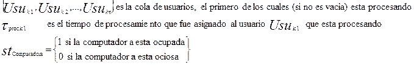
y
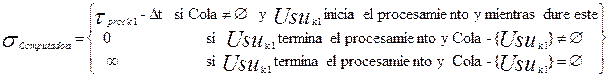
Aquí como antes Dt debió ser precisado como Dtproc k 1 pues se refiere al tiempo transcurrido desde que Usuk 1 comenzó a procesar y hasta que terminó, pero en la práctica este tiempo remanente solo se actualiza en el momento en que se inicia el procesamiento y se incluye en la lista de eventos el momento en que lo terminará.
Para el operador:
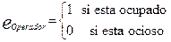
Vale aquí también la aclaración sobre el Dt (realmente DtOperador) como en el caso de las otras componentes activas.
Por último, para la Componente Pasiva Almacén, su estado se define simplemente como un listado de usuarios (programas)

- Precisamos ahora las Influencias de cada componente activa.
Recuédese que un Usuario se activa cuando termina una edición. Entonces las influencias de cada usuario son el mismo y la computadora (porque incrementa la cola). La computadora se activa cuando termina un procesamiento. Por tanto sus influencias son ella misma, los usuarios (el que pasa a esperar que su programa sale del almacén y los que se mueven en la cola) y el propio almacén. Por su parte una activación del operador influye sobre el mismo, sobre el almacén (que vacía) y sobre los usuarios, que eventualmente reciben su programa. Entonces:
"i=1,2,...,99
Influencias(Usui)={ (Usui, eUsu i,sUsu i), (Computadora, eComputadora, sComputadora) }
Influencias(Computadora)={ (Computadora, eComputadora, sComputadora),
(Usu1, eUsu 1,sUsu 1), (Usu2, eUsu 2,sUsu 2), ..., (Usu99, eUsu 99,sUsu 99),
(Almacen, eAlmacen, sAlmacen)}
Influencias(Operador) = {(Operador,eOperador, sOperador), (Almacen, eAlmacen, sAlmacen),
(Usu1, eUsu 1,sUsu 1), (Usu2, eUsu 2,sUsu 2), ..., (Usu99, eUsu 99,sUsu 99)}
- Ahora precisamos las reglas de interacción que definen las transiciones durante los eventos principales:
La terminación del trabajo de edición de un Usuario, la terminación del tiempo de procesamiento en la computadora y la extracción de trabajos del Almacén por el operador
dUsu i: Influencias(Usui) ¾¾¾¾> Influencias(Usui)
Mediante esta regla
(Usui, eUsu i,sUsu i) , (Computadora, eComputadora, sComputadora)
se transforma en
(Usui, e*Usu i,s*Usu i) , (Computadora, e*Computadora, s* Computadora)
donde
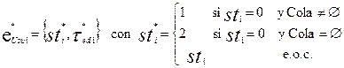
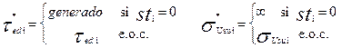
De manera análoga, cuando se activa la computadora se producen las transiciones determinadas por la función
dComputadora: Influencias(Computadora) ¾¾¾¾> Influencias(Computadora)
la cual aplica
(Computadora, eComputadora, sComputadora),
(Usu1, eUsu 1,sUsu 1), (Usu2, eUsu 2,sUsu 2), ..., (Usu99, eUsu 99,sUsu 99),
(Almacen, eAlmacen, sAlmacen)
en
(Computadora, e*Computadora, s*Computadora),
(Usu1, e*Usu 1,s*Usu 1), (Usu2, e*Usu 2,s*Usu 2), ..., (Usu99, e*Usu 99,s*Usu 99),
(Almacen, e*Almacen, s*Almacen)
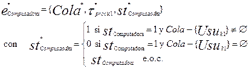
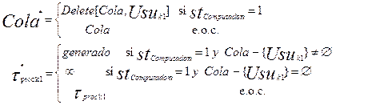
Para todos los usuarios (i=1,2,...99)
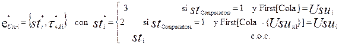
Y sobre el Almacén:
Por último definimos las transiciones que se ejecutan cuando se activa el operador
dOperador: Influencias(Operador) ¾¾¾¾> Influencias(Operador)
que aplica
(Operador,eOperador, sOperador),
(Almacen, eAlmacen, sAlmacen),
(Usu1, eUsu 1,sUsu 1), (Usu2, eUsu 2,sUsu 2), ..., (Usu99, eUsu 99,sUsu 99)
en
(Operador,e*Operador, s*Operador),
(Almacen, e*Almacen, s*Almacen),
(Usu1, e*Usu 1,s*Usu 1), (Usu2, e*Usu 2,s*Usu 2), ..., (Usu99, e*Usu 99,s*Usu 99)

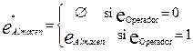
Ideas básicas de la estrategia OE con rastreo de actividades RA
La solución del problema anterior puede ser mejorada desde el punto de vista de claridad y de implementación computacional con una modificación de la estrategia como rastreo de actividades. La idea es tratar de simplificar las Influencias de las componentes activas y las funciones de transición, en particular el cambio de los tiempos remanentes mediante el concepto rastreo de actividades.
Supongamos que separamos la “Cola” como componente de la computadora. En este caso cada usuario puede “rastrear” como se mueve su programa en la cola y cuando termina de ser procesado, puede gobernar entonces los cambios de estado “1 al 2” y “2 al 3” y de hecho la computadora puede dejar de ser componente activa. Supongamos también que la acción del operador cada 8 horas es abrir la reja del almacén y cada usuario busca su programa. Entonces le bastaría “rastrear” la reja, en el sentido que esté abierta. Por su parte el operador también “rastrea” el almacén, tan pronto se vacíe el almacén, cierra la reja y se pone a esperar.
Esta forma de razonamiento en la que constantemente se verifican condiciones para realizar un cambio de estado se denomina actividad. Son actividades en el ejemplo las que realiza el Usuario i cuando pasa su programa a la posición 1, o cuando una vez procesado lo pasa al almacén, o lo recoge de este. Formalmente, una actividad es un cambio de estado que requiere ciertas condiciones. El cambio de estado no se ejecuta cuando el tiempo remanente anterior se hace cero, sino cuando además de eso se cumplen las condiciones.
Para lograr esto, permitimos en esta estrategia que los tiempos remanentes sigan decreciendo por debajo de cero en la medida que avance el reloj. Esto debe ser interpretado como que una vez que sa £ 0, la componente activa a está internamente lista para cambiar de estado, por ejemplo cuando Usui esta en st = 1 (en cola), que está esperando. El cambio al estado 2 no depende de él internamente, sino de que la Cola haya avanzado hasta llevarlo a la posición 1. Las funciones de condición se expresan como funciones boolenas y llegan a formar parte de las reglas de transición. Tales funciones de condición se expresan sobre ciertas componentes activas o pasivas que son las que pueden influir sobre a, aparece así el concepto de Influyentes(a) además de Influencias(a).
En definitiva en cada momento se analizan todas las componentes activas con tiempo remanente £ 0 y para cada una de ellas se precisan si se cumplen las condiciones en función de las influyentes. Si se cumplen, se hace el cambio de estado, en caso contrario todo se mantiene excepto que se reduce el tiempo remanente en una cantidad igual al incremento del reloj.
Estructura general del modelo OE con RA
- Separemos como antes, las Componentes={a1, a2,..., an} en dos subconjuntos disjuntos uno que contiene las “a” primeras componentes y que son las ComponentesActivas y otro con las “n-a” restantes componentes que son las ComponentesPasivas
- " i=1,2,...,n definimos ea i = Estado(ai)
- " i=1,2,...,a definimos sa i = TiempoRemanente(ai), considerado como el tiempo necesario para que la componente activa ai esté lista para cambiar de estado, cuando se den las condiciones. Nota importante: ahora sa i es un número real, que puede ser negativo
- " i=1,2,...,a definimos
Influencias(ai)={ (b1,eb 1, sb 1), (b2,eb 2, sb 2), ..., (bk,eb k, sb k),
(bk+1,eb k+1), (bk+2,eb k+2), ..., (bm,eb m) }
como el conjunto de componentes (activas o pasivas) que pueden cambiar de estado como consecuencia de una activación de ai Recordar que (ai, ea i, sa i) pertenece a Influencias(ai).
- " i=1,2,...,a definimos ahora
Influyentes(ai)={ (g1,eg 1, sg 1), (g2,eg 2, sg 2), ..., (gl,eg l, sg l),
(gl+1,eg k+1), (gk+2,eg k+2), ..., (gp,eg p) }
como el conjunto de componentes (activas o pasivas) que son capaces de provocar un cambio en la componente ai porque intervienen en las condiciones para que ai cambie de estado. También se tiene que (ai, ea i, sa i) pertenece a Influyentes(ai).
- Existirá también una función Selecciona, implementada en la forma que se dirá posteriormente y que determinará ahora no un evento, sino una componente para la cual se verificará si se cumplen las condiciones de activación.
- Las funciones de transición se transforman desde la OE clásica a esta estrategia con RA así:
da i : Influencias(ai) C Influyentes(ai) ¾¾> Influencias(ai)
para i=1,2,…,a
da I ( (b1,eb 1, sb 1), (b2,eb 2, sb 2), ..., (bk,eb k, sb k), (bk+1,eb k+1), (bk+2,eb k+2), ..., (bm,eb m),
(g1,eg 1, sg 1), (g2,eg 2, sg 2), ..., (gl,eg l, sg l), (gl+1,eg k+1), (gk+2,eg k+2), ..., (gp,eg p) )
= (b1,e*b 1, s*b 1), (b2,e*b 2, s*b 2), ..., (bk,e*b k, s*b k),
(bk+1,e*b k+1), (bk+2,e*b k+2), ..., (bm,e*b m)
- Los nuevos valores
e*b 1, s*b 1 ,e*b 2, s*b 2, ..., e*b k, s*b k, e*b k+1, e*b k+2, ...,e*b m
determinados por da I se caracterizan por dos funciones:
Conda i : Influyentes(ai) ¾¾> {True,False }
que es un predicado que define en términos de las Influyentes de ai
(g1,eg 1, sg 1), (g2,eg 2, sg 2), ..., (gl,eg l, sg l), (gl+1,eg k+1), (gk+2,eg k+2), ..., (gp,eg p)
si se cumplen (o no) las condiciones para la activación de ai (suponiendo que sa i £ 0.
Acciona i : Influencias(ai) C Influyentes(ai) ¾¾> Influencias(ai)
que como se puede ver tiene el mismo dominio e imagen de da i
En esencia, si X define un vector de Influencias y Y define un vector de Influyentes
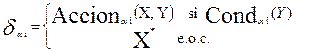
X*, el nuevo vector de Influencias es el mismo que X desde el punto de vista de las variables de estado:
e*b 1= eb 1, e*b 2= eb 2, ..., e*b k= eb k, e*b k+1= eb k+1, e*b k+2= eb k+2, ...,e*b m= eb m
pero se reduce en Dt los tiempos remanentes de las componentes activas
s*b 1=sb 1 - Dt, s*b 2=sb 2- Dt, ..., s*b k=sb k- Dt
Esto es, si Conda i = True, se aplica Acciona i para obtener los próximos estados. En caso contrario no se realiza ninguna acción salvo el decremento de los tiempos remanentes en un valor Dt correspondiente al incremento de tiempo
Antes de ver como se precisa la función selecciona y el avance del reloj, miremos como estas definiciones se concretan en el ejemplo
Aplicación al ejemplo. Programa General
ComponentesActivas ={ Usu1, Usu2, ...,Usu99, Operador}
ComponentesPasivas ={Cola, Computadora, Almacen, Reja}
Vea que la Computadora pasa a ser una componente pasiva y que las componentes activas son más “reales”
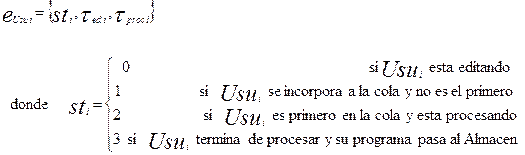
Cuando sti = 1 el usuario está esperando en la cola para iniciar el procesamiento (la espera depende del tiempo de procesamiento de otros usuarios en la cola antes que él). Cuando sti = 3 el usuario ya procesó y está esperando que abran la reja (esta espera depende del tiempo que falta por abrir la Reja por parte del Operador)
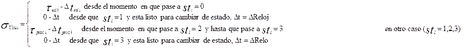
En otras palabras, cuando el usuario i llega a la cola, el tiempo remanente para cambiar de estado (comenzar a procesar su programa) depende de los tiempos de procesamiento de usuarios de la Cola (influyente) y cuando ya está procesado depende del tiempo en que el operador abre la Reja (otra influyente). En este sentido, el usuario “rastrea” condiciones para hacer dos actividades: la condición de llegar a la posición 1 de la Cola (la actividad es el inicio del procesamiento) y la condición de abrir la Reja (la actividad correspondiente se define en términos de que usuario recoge su programa y pasa al estado 0).
Lo importantes que nos evitamos complicaciones algebraicas es definir el tiempo remanente cuando el Usuario i está en los estados 1 y 3, cuestiones que dependen de que otras componentes cumplan ciertas condiciones.
La otra componente activa es aún más simple:
Y para las componentes pasivas:
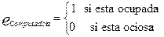

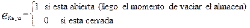
Veamos ahora las influencias de cada componente activa:
"i=1,2,...,99
Influencias(Usui)={ (Usui, eUsu i,sUsu i), (Cola, eCola),
(Computadora, eComputadora), (Almacén, eAlmacen) }
Influencias(Operador) = {(Operador,eOperador, sOperador), (Reja, eReja, sReja) }
Y veamos las Influyentes, de cada componente activa
Influyentes(Usui)={ (Usui, eUsu i,sUsu i), (Cola, eCola), (Reja, eReja) }
Influyentes(Operador) = {(Operador,eOperador, sOperador), (Almacén, eAlmacen)
Definamos las funciones de condición y de acción para cada componente activa
CondOperador : Influyentes(Operador) ¾¾> {True,False}
que define cuando se puede activar el Operador en términos de sus influyentes:
CondOperador(Operador,eOperador, sOperador), (Almacén, eAlmacen) =
(eOperador = 0)Ú (eOperador = 1Ù eAlmacen=Æ)
AccionOperador que aplica :
Influyentes(Operador) x Influencias(Operador) ¾¾>Influencias(Operador)
Esto es, que se define con los datos de
(Operador,eOperador, sOperador), (Almacén, eAlmacen), (Reja, eReja)
y debe resultar en los nuevos valores:
(Operador,e*Operador, s*Operador),), (Reja, e*Reja)
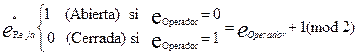
Recuérdese que teóricamente
dOperador: Influyentes(Operador) x Influencias(Operador) ¾¾>Influencias(Operador)
y su valor
dOperador ( (Operador,eOperador, sOperador), (Almacén, eAlmacen), (Reja, eReja) )=
( (Operador,e*Operador, s*Operador), (Reja, e*Reja) ) si CondOperador
y es ( (Operador,eOperador, sOperador -DReloj), (Reja, eReja) ) e.o.c
pero en la práctica dOperador no se implementa y como veremos más tarde el tiempo remanente no se decrementa sino que el Reloj global de la simulación adelanta relativamente a un “reloj local” de la componente “operador” (y de cada componente activa), lo que equivale a tener un tiempo remanente negativo.
Veamos las funciones CondUsu i y AccionUsu i
CondUsu i : Influyentes(Usui) ¾¾> {True,False}
CondUsu i (Usui, eUsu i,sUsu i), (Cola, eCola), (Reja, eReja) =
(sti=0) Ú (sti=1 Ù First[Cola]=Usui) Ú (sti=2) Ú (sti=3 Ù eReja=1)
AccionUsu i : Influyentes(Usui) x Influencias(Usui) ¾¾>Influencias(Usui)
Esto es, que se define con los datos de
(Usui, eUsu i,sUsu i),(Cola, eCola),(Computadora, eComputadora), (Almacén, eAlmacen),(Reja, eReja)
y que debe resultar en nuevos valores para
(Usui, e*Usu i,s*Usu i), (Cola, e*Cola), (Computadora, e*Computadora), (Almacén, e*Almacen)
Recordar que
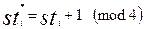
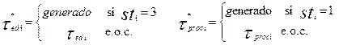
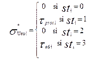
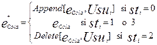
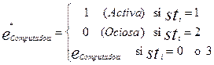
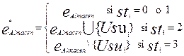
La función
dUsu i: Influyentes(Usui) x Influencias(Usui) ¾¾>Influencias(Usui)
que en la práctica no se implementa daría los valores anteriores cuando CondUsu i es cierta, y reduciría los tiempos remanentes e.o.c.
La función Selecciona esta estrategia OE con RA da prioridad a componentes para cheqeuar condiciones, por ejemplo,
ListaDePrioridades={Usu1, Usu2, ...,Usu99,Operador}
En la versión del programa barremos esta lista con un puntero, observamos para cuáles de las componentes de esta lista el tiempo remanente es menor o igual a cero (o lo que es equivalente, para cuales de esta componente el momento en que podían cambiar de estado es menor o igual al Reloj actual) y chequeamos las condiciones para tales componentes; si se cumplen ejecutamos la Acción correspondiente, en caso contrario, avanzamos el Reloj con lo cual los relojes locales de las componentes activas que están listas pero no cumplen las condiciones se atrasan respecto al Reloj global (esto equivale a tener tiempos remanentes negativos)
Programa Principal
Begin
{Inicializacion}
Reloj:=TiempoInicio
For i=1 to n ea i:=Estado(ai)
For i=1 to a ta i:=TiempoInicio+ sa i
ListaDePrioridades=Selecciona(ComponentesActivas)
While Reloj<=TiempoFin
begin
P:=Inicio de ListaDePrioridades
While P <> Fin de ListaDePrioridades
begin
Mover P en ListaDePrioridades hasta encontrar a tal que cumpla
(ta < = Reloj) Ù (Conda )
{Transicion de Estado}
Ejecutar Acciona
end {While P}
{Avance del Reloj}
Reloj:=min{tb ½ Reloj< tb }, bÎComponentesActivas
end {while Reloj}
End (Begin)
Este Programa Principal se complementa con dos procedimientos para cada compoente activa:
procedure Conda
begin
{devuelve el valor booleano en dependencias de las Influyentes de a}
end
procedure Acciona
Begin
"b Î Influencias(a) y b Î ComponentesActivas
begin
{Actualizacion}
e*b
s*b
t*b=Reloj+s*b
end
"b Î Influencias(a) y b Î ComponentesPasivas actualizar e*b
End
De esta forma el Programa Principal avanza el Reloj, relativamente a ta cuando la componente a está internamente lista para cambiar de estado pero no se puede activar porque no se cumplen las condiciones.
Conclusiones
La estrategia OE con RA realmente simplifica el modelo, permite lograr muchas interpretaciones más realistas de las componentes (activas y pasivas) y sobre todo facilita la implementación de las transiciones de estado y en particular del cálculo de los tiempos remanentes. Desde el punto de vista del modelo teórico, la idea esencial es permitir que las componentes activas tengan tiempos remanentes que puedan decrecer por debajo de cero (tan pronto ellas mismas estén listas internamente para cambiar de estado) pero necesitan de condiciones que se formulan en términos de otras componentes. Desde el punto de vista computacional esto se implementa a través de relojes locales de cada componente activa, que pueden quedarse retrasados respecto al Reloj general de la Simulación.
Aceptando el Programa Principal, la aplicación práctica de esta estrategia exige apenas la programación de 2 procedimientos para cada componente activa: un procedimiento de condición sobre las influyentes de esa componente y que valora si se cumplen las condiciones para activarse la componente (suponiendo ya que su tiempo remanente es menor o igual a cero) y un procedimiento de acción, que describe las transiciones en esa componente y todas sus influencias. Cualquiera de los ejercicios de las Clases Prácticas de Simulación Orientada a Eventos puede ser utilizado para ensayar esta nueva estrategia y como en el caso anterior, resultaría muy bueno, que cada estudiante tuviera una implementación del Programa Principal en su lenguaje de Programación favorito
Bibliografía
[1] Maisel Herbert y Gnugnoli Giuliano, "Simulation of Discrete Stochastic Systems", Science Research Associates Inc. USA, 1972, Cap. 2
[2] Moreno C. R. "Modelación y Simulación", Universidad de La Habana, versión en disco